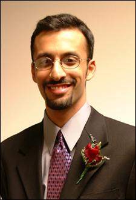

|
K-grams Founder Matches Kids with College-Student Mentors Monday, January 20, 2003 By Mary Lendzion When 1,000 elementary school students meet their college-student mentors
from the University of Michigan for the fifth annual K-grams Kids-Fair
on March 21, it will be because K-grams founder, Rishi Moudgil, saw a
need for a one-on-one mentoring and learning program. K-grams, short for Kids Programs, pairs students in kindergarten through fifth grade with college pen pals so they can develop a mentoring relationship. The program started with about seven schools and 750 mentors. Now, there are ten schools and 1,500 mentors. The schools are Bryant, Carpenter, Mitchell, Pittsfield, Northside, and Dicken elementaries in Ann Arbor, Ford and Holmes elementary schools in Ypsilanti, and Vetal School and Gompers Elementary in Detroit. "I was fortunate enough to get involved the first year of the program, and throughout the past five years, I've had the pleasure of working with Rishi," said Ani Shehigian of Livonia, Treasurer of K-grams and a 2002 graduate of the university. "He is a very dynamic leader, and he is working to expand th program beyond the University of Michigan." For his efforts, Moudgil received this year's Grand Angel Award from Blue Cross Blue Shield of Michigan. He accepted the Grand Angel trophy and a check for $5,000 in November at and awards celebration. "Through Rishi's work now as the President of K-grams, Inc., his main focus is to expand to other colleges and universities throughout the country," said Shehigian. "The money that we received through Blue Cross will help the dream of expanding the program come true."
|